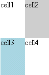

L'élément <grid> est essentiellement l'équivalent XUL d'une table. Comme
les tables HTML, les grilles fournissent une manière flexible d'organiser ou
placer des éléments enfants. <grid> est basé sur le même modèle que les cadres XUL. Voici un exemple simple de grille:
<grid>
<columns>
<column flex="1"/>
<column flex="1"/>
</columns>
<rows>
<row flex="1">
<button value="cell1"/>
<button value="cell2" style="background-color: lightgrey;"/>
</row>
<row flex="1">
<button value="cell3"style="background-color: lightblue;"/>
<button value="cell4"/>
</row>
</rows>
</grid>
|  |
C'est un exemple de grille avec 2 colonnes flexibles et 2 lignes
flexibles.
Une propriété intéressante de grid est qu'il importe peu que
vous placiez des éléments dans l'étiquette de colonne ou de ligne. Dans l'un
ou l'autre cas, les éléments apparaissent comme définis dans leur parent.
Par exemple vous pourriez faire ceci:
<grid>
<rows>
<row flex="1"/>
<row flex="1"/>
</rows>
<columns>
<column flex="1">
<button value="cell1"/>
<button value="cell2"/>
</column>
<column flex="1">
<button value="cell3"/>
<button value="cell4"/>
</column>
</columns>
</grid>
|
Vous pouvez également mélanger les deux:
<grid>
<columns>
<column flex="1">
<button value="column-cell1"/>
<button value=" column-cell2"/>
</column>
<column flex="1">
<button value="column-cell3"/>
<button value="column-cell4"/>
</column>
</columns>
<rows>
<row flex="1">
<button value="cell1"/>
<button value="cell2"/>
</row>
<row flex="1">
<button value="cell3"/>
<button value="cell4"/>
</row>
</rows>
</grid>
|
Ceci placera cell1-4 en haut de column-cell1-4.
Pourquoi les grilles sont différentes des tableaux:
- Les colonnes et les lignes peuvent avoir différentes flexibilités.
- Les grilles n'ont pas de <td> équivalent.
- Les grilles sont XUL à 100% et suivent les mêmes règles que les cadres.
- Vous pouvez placer des éléments dans des lignes et des colonnes.
Limitations actuelles:
- En plaçant des cadres sur des lignes et des colonnes, vous gâchez la
disposition de grilles. Ceci sera bientôt corrigé.
- Les envergures (spans) ne sont pas actuellement supportées mais sont
actuellement en cours d'implémentation.
|